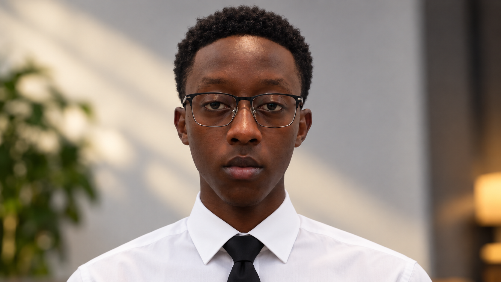

Frontend
Creating responsive, user-focused interfaces.
I'm GANZA Nyirikunda Alwis — a software development graduate who enjoys building practical applications, exploring emerging technology, and solving real-world problems through code.

I completed my Software Development studies at École Technique Saint Kizito Musha. My learning has taken me across frontend interfaces, backend services, databases, software testing, networking, and the foundations of emerging technologies.
I'm motivated by the process of taking an idea, understanding the problem behind it, and shaping it into something people can actually use. I value continuous learning, practical experience, and building projects that grow my ability as a developer.
My current foundation spans the web stack, databases, programming, and the technologies I'm continuing to explore.
Creating responsive, user-focused interfaces.
Building application logic and API foundations.
Working with structured data and development workflows.
Growing my understanding of modern technology.
A selection of systems I've worked on or planned as part of my software development journey. Project descriptions reflect the scope discussed, not claims of commercial deployment.
A system concept for managing stock items, categories, quantities, users, and inventory operations using a React frontend, Express API, and MySQL database.
A database-driven application concept for employee records, departments, salary calculations, and monthly payroll reporting.
A system concept covering farmer registration, crop and season details, quantities, payment records, and employee access.
An application concept for employee and account management, role-aware access, and organized business records.
A personal assistant experiment exploring Python, voice interaction, and the idea of a useful AI companion on the desktop.
A project from my development journey. I'm preparing to add a more detailed description of its purpose, features, and technology stack.
My goal is to grow into a skilled, dependable software developer who builds technology that has a meaningful impact.
Strengthen my foundations through consistent practice, feedback, and real projects.
Turn everyday challenges into accessible, thoughtful digital solutions.
Gain professional experience, collaborate with others, and build products with long-term value.
Keep learning about AI, Web3, and emerging tools while staying grounded in strong software engineering.
HAVE AN IDEA OR AN OPPORTUNITY?
I'm interested in connecting with people, teams, and opportunities where I can contribute, learn, and grow.